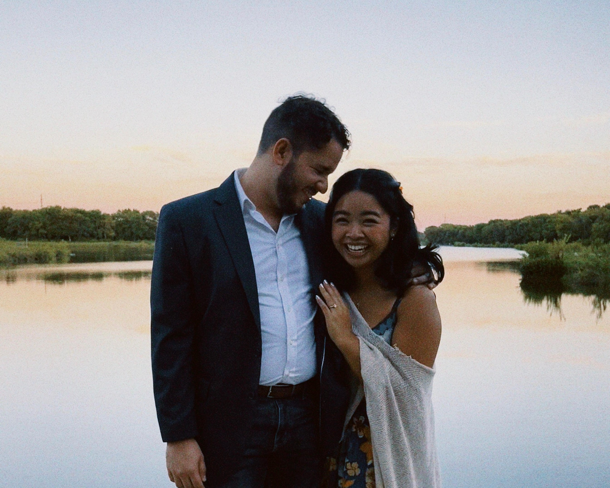

Laureen Kuizon
Associate Pastor
I discovered the United Methodist witness when I entered the Wesley in 2020.
I had not known there was a tradition that so stubbornly held on to grace-first theology while placing such a deep emphasis on personal and social holiness.
I dove in headfirst as a student and then served in other roles as they popped up (as all ministry people eventually do),
becoming an Intern and later an Associate Director. By the grace of God, I realized my call to ministry in 2024, and after graduating,
enrolled at Perkins School of Theology and began my journey toward ordination as an Elder.
I met some of my favorite people here, including my best friends, mentors, and partner (Cesar.)
In between all the late night convos and movie franchise marathons,
the Wesley is a beautiful space that meets students where they are and challenges them to be transformed and perfected in God's love.
Where I am now: Arlington Heights UMC (Fort Worth, TX)